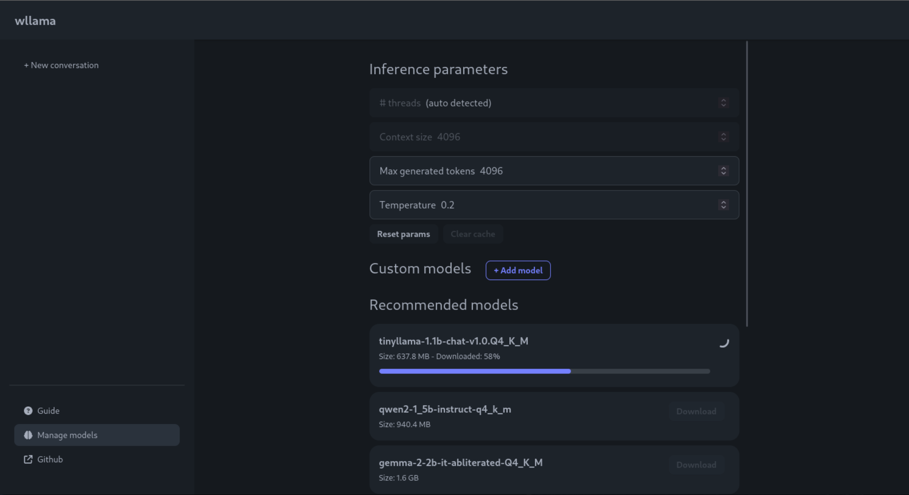

WebAssembly binding for llama.cpp
For changelog, please visit releases page
Version 2.0 is released 👉 read more

split and cat)Limitations:
Cross-Origin-Embedder-Policy and Cross-Origin-Opener-Policy headers. See this discussion for more details.Demo:
Install it:
npm i @wllama/wllama
Then, import the module:
import { Wllama } from '@wllama/wllama';
let wllamaInstance = new Wllama(WLLAMA_CONFIG_PATHS, ...);
// (the rest is the same with earlier example)
For complete code example, see examples/main/src/utils/wllama.context.tsx
NOTE: this example only covers completions usage. For embeddings, please see examples/embeddings/index.html
For complete code, see examples/basic/index.html
import { Wllama } from './esm/index.js';
(async () => {
const CONFIG_PATHS = {
'single-thread/wllama.wasm': './esm/single-thread/wllama.wasm',
'multi-thread/wllama.wasm' : './esm/multi-thread/wllama.wasm',
};
// Automatically switch between single-thread and multi-thread version based on browser support
// If you want to enforce single-thread, add { "n_threads": 1 } to LoadModelConfig
const wllama = new Wllama(CONFIG_PATHS);
// Define a function for tracking the model download progress
const progressCallback = ({ loaded, total }) => {
// Calculate the progress as a percentage
const progressPercentage = Math.round((loaded / total) * 100);
// Log the progress in a user-friendly format
console.log(`Downloading... ${progressPercentage}%`);
};
// Load GGUF from Hugging Face hub
// (alternatively, you can use loadModelFromUrl if the model is not from HF hub)
await wllama.loadModelFromHF(
'ggml-org/models',
'tinyllamas/stories260K.gguf',
{
progressCallback,
}
);
const outputText = await wllama.createCompletion(elemInput.value, {
nPredict: 50,
sampling: {
temp: 0.5,
top_k: 40,
top_p: 0.9,
},
});
console.log(outputText);
})();
Alternatively, you can use the *.wasm files from CDN:
import WasmFromCDN from '@wllama/wllama/esm/wasm-from-cdn.js';
const wllama = new Wllama(WasmFromCDN);
// NOTE: this is not recommended, only use when you can't embed wasm files in your project
Cases where we want to split the model:
We use llama-gguf-split to split a big gguf file into smaller files. You can download the pre-built binary via llama.cpp release page:
# Split the model into chunks of 512 Megabytes
./llama-gguf-split --split-max-size 512M ./my_model.gguf ./my_model
This will output files ending with -00001-of-00003.gguf, -00002-of-00003.gguf, and so on.
You can then pass to loadModelFromUrl or loadModelFromHF the URL of the first file and it will automatically load all the chunks:
const wllama = new Wllama(CONFIG_PATHS, {
parallelDownloads: 5, // optional: maximum files to download in parallel (default: 3)
});
await wllama.loadModelFromHF(
'ngxson/tinyllama_split_test',
'stories15M-q8_0-00001-of-00003.gguf'
);
When initializing Wllama, you can pass a custom logger to Wllama.
Example 1: Suppress debug message
import { Wllama, LoggerWithoutDebug } from '@wllama/wllama';
const wllama = new Wllama(pathConfig, {
// LoggerWithoutDebug is predefined inside wllama
logger: LoggerWithoutDebug,
});
Example 2: Add emoji prefix to log messages
const wllama = new Wllama(pathConfig, {
logger: {
debug: (...args) => console.debug('🔧', ...args),
log: (...args) => console.log('ℹ️', ...args),
warn: (...args) => console.warn('⚠️', ...args),
error: (...args) => console.error('☠️', ...args),
},
});
This repository already come with pre-built binary from llama.cpp source code. However, in some cases you may want to compile it yourself:
You can use the commands below to compile it yourself:
# /!\ IMPORTANT: Require having docker compose installed
# Clone the repository with submodule
git clone --recurse-submodules https://github.com/ngxson/wllama.git
cd wllama
# Optionally, you can run this command to update llama.cpp to latest upstream version (bleeding-edge, use with your own risk!)
# git submodule update --remote --merge
# Install the required modules
npm i
# Firstly, build llama.cpp into wasm
npm run build:wasm
# Then, build ES module
npm run build